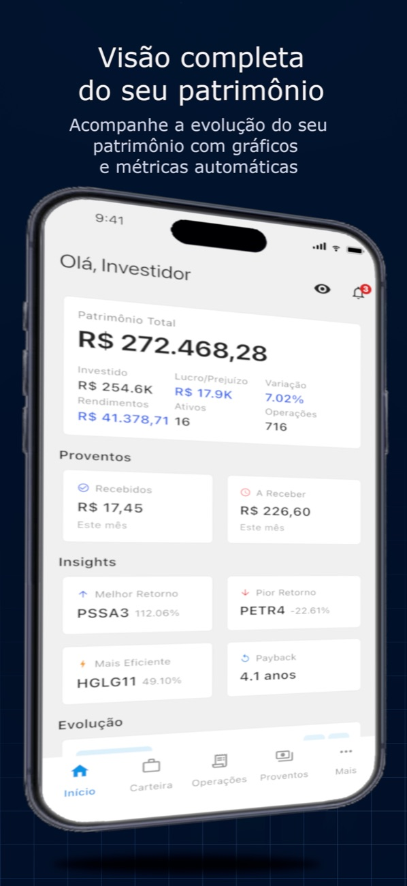
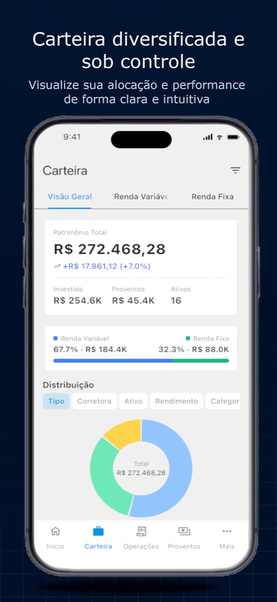
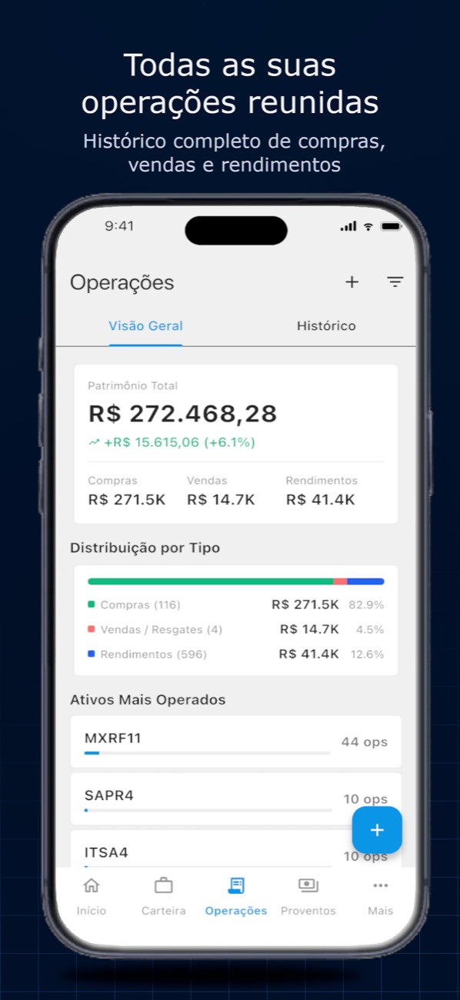
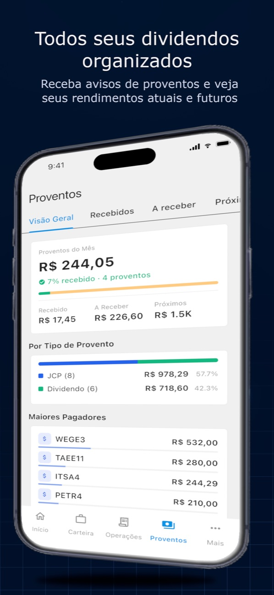
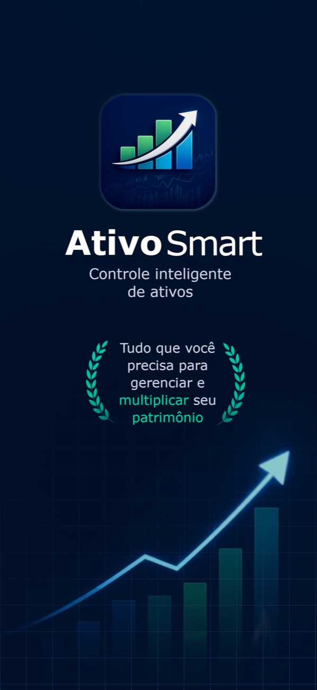

AtivoSmart
Carteira & proventos





Telas reais · toque para ampliar
AtivoSmart
Acompanhamento de investimentos para o mercado brasileiro: ações da B3, dividendos, ETFs, FIIs, Crypto, tesouro num só lugar. App iOS, painel web e backend próprio, com agenda de proventos por ativo, notificações de eventos e versão para consultorias.